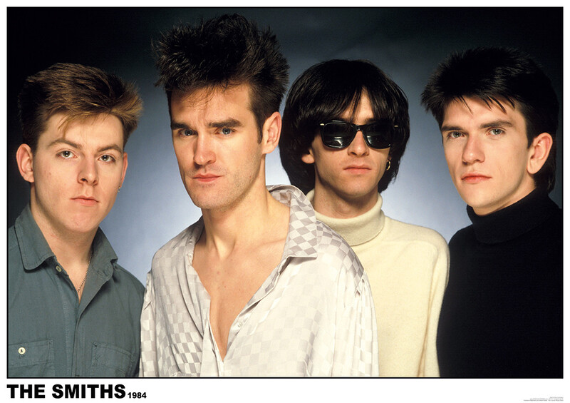

The Smiths
The Smiths byla britská alternativně rocková skupina aktivní v 80. letech. Skupinu tvořili charismatický zpěvák Morrissey, kytarista Johnny Marr, baskytarista Andy Rourke a bubeník Mike Joyce. Jejich hudba se vyznačovala kombinací chytlavých melodií, inteligentních textů a unikátního zvuku, který kombinoval jiskřivé kytarové hry s jemnými aranžemi. The Smiths se stali jedním z nejvýznamnějších a nejvlivnějších britských hudebních aktů 80. let, přičemž jejich písně se dotýkaly tématických oblastí jako osamělost, touha, společenská kritika a identita.
Texty Morrisseyho, který je znám svým slovníkem a poetickým stylem, oslovují posluchače svou upřímností a často kontroverzními tématy. Písně jako "This Charming Man", "How Soon Is Now?" a "There Is a Light That Never Goes Out" se staly ikonickými hity, které dodnes rezonují s fanoušky po celém světě. Navzdory svému relativně krátkému trvání skupina The Smiths zanechala výrazný stopu v hudebním světě a jejich vliv lze vidět v mnoha dalších alternativních a indie kapelách. Jejich dědictví spočívá v neobyčejném talentu jejich členů a jejich schopnosti vytvářet emotivní a nezapomenutelnou hudbu, která trvá dodnes.
